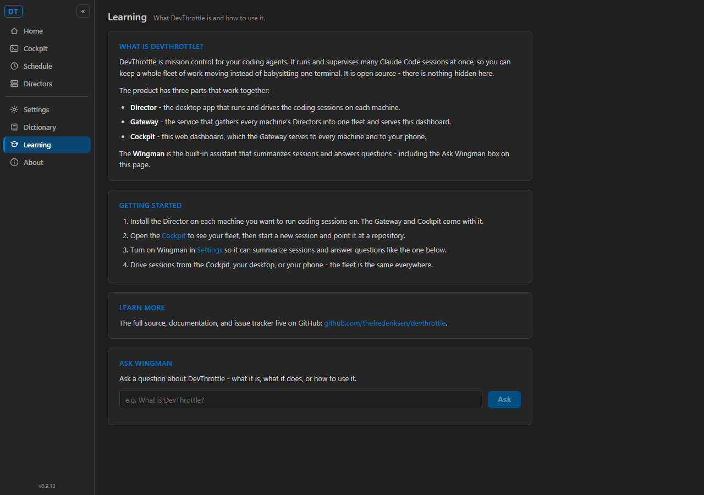
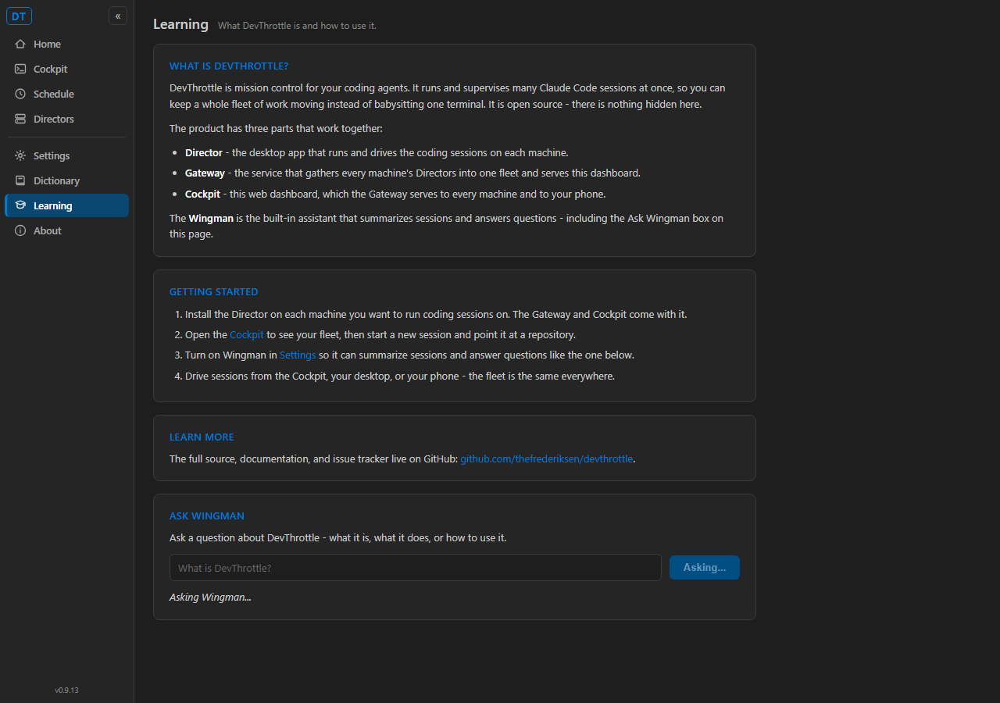
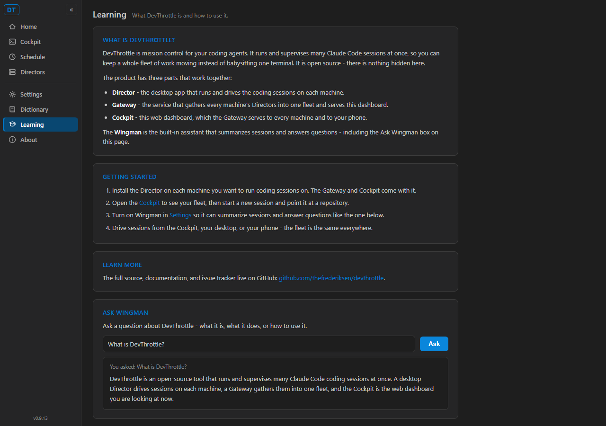

Issue #472 - [Cockpit] Learning/Help page with "Ask Wingman"
Developer Agent proof - CenCon Development Method - branch issue-472-cockpit-learning
What was implemented
- New Cockpit Learning page at route
/learn
(src/CcDirector.Cockpit/Components/Pages/Learning.razor + .razor.css): static
overview (what DevThrottle is), a getting-started section, an outbound GitHub link, and an
Ask Wingman box.
- New nav item "Learning" in the shared
.nv rail
(Components/Layout/NavMenu.razor), an in-app NavLink (no full reload).
- New Gateway endpoint
POST /wingman/ask-devthrottle
(src/CcDirector.Gateway/Api/GatewayWingmanVoiceEndpoint.cs) backed by a new
WingmanTranslator.AskAboutDevThrottleAsync grounded with a DevThrottle product/docs
system prompt - it reuses the EXISTING warm-brain (IAgentBrain) path; no new LLM transport.
- New Cockpit client method
GatewayClient.WingmanAskDevThrottleAsync -
the Cockpit calls the Gateway, never a Director.
- Explicit not-configured state: availability is read from the existing
GET /gateway/wingman signal; when Wingman is off the page shows a named "set up Wingman"
message instead of failing silently (no-fallback rule).
- Tests: 3 new
WingmanTranslatorTests (answer + clear, empty-throws,
prompt grounding) and 1 new Gateway endpoint test (empty-text 400 wire path). All pass.
Acceptance criteria - Expected vs Actual
| # | Criterion (Expected) | Actual | Result |
|---|
| 1 |
A "Learning" nav item is visible in the Cockpit .nv rail and navigates to the page
with an in-app NavLink (no full reload). |
"Learning" item present and highlighted in the rail; clicking it routes to /learn
via SPA navigation (URL changed, no document reload). See proof1. |
PASS |
| 2 |
The page renders static overview + getting-started + at least one GitHub link. |
"What is DevThrottle", "Getting started", and the link
github.com/thefrederiksen/devthrottle all render. See proof1. |
PASS |
| 3 |
An Ask Wingman input box and a submit control are present. |
One input.lrn-input + one button.lrn-submit ("Ask") present. See proof1. |
PASS |
| 4 |
When Wingman is available, submitting a question returns a non-empty answer rendered on the page,
with a visible in-progress indicator while waiting. |
Asking "What is DevThrottle?" shows the button flip to "Asking..." / a loading line (proof2a), then
renders the answer (proof2). Gateway log line confirms it was served. |
PASS |
| 5 |
When Wingman is NOT available, the area shows an explicit "set up Wingman" message and does not
throw, hang, or render an empty box. |
With enabled=false, the page shows "Wingman is not set up on this Gateway" with a
Settings link and NO input box. See proof3. |
PASS |
| 6 |
The Ask path is Cockpit -> Gateway (the Cockpit never calls a Director directly). |
The Cockpit posts to the Gateway endpoint /wingman/ask-devthrottle; the Gateway log line
[GatewayWingmanVoice] ask-devthrottle textLen=20 proves the question was served through
the Gateway. See gateway-log.txt. |
PASS |
| 7 |
The page complies with the Cockpit visual style (shared .nv rail + Cockpit page styling). |
Page uses the shared .nv rail (alongside About/Dictionary/etc.) and the Cockpit dark-theme
tokens from app.css; cards/headings match the existing pages. See proof1 vs the rail. |
PASS |
How this was proven
The real Cockpit Blazor app (devthrottle-cockpit.dll, the actual Learning.razor and
NavMenu) was run through a real Blazor Server circuit in headless Chromium, pointed at a small
stub Gateway that implements exactly the three endpoints the page calls
(GET /gateway/wingman, POST /wingman/ask-devthrottle, GET /healthz) and
logs each request. The stub lets the harness toggle Wingman availability for the available and not-configured
runs and proves the Cockpit -> Gateway wire. The real Gateway endpoint and translator are additionally
covered by the passing .NET tests (WingmanTranslatorTests, GatewayVoiceTurnAsyncTests).
Harness: proof-harness.py. Full solution builds clean: 0 Warning(s), 0 Error(s).
Screenshots
proof1 - Learning nav item + page loaded (overview + Ask Wingman box)

proof2a - in-progress indicator while the answer is being fetched

proof2 - Ask Wingman question answered (question + rendered answer)

proof3 - not-configured state (explicit set-up message, no ask box)

CenCon impact
No architecture or security drift. The change is additive within existing containers
(CcDirector.Cockpit, CcDirector.Gateway) and reuses the existing warm-brain
(CcDirector.Core / IAgentBrain) LLM transport - no new container, no new transport, no
new external surface beyond one additive loopback Gateway route. architecture_manifest.yaml and
security_profile.yaml are current and unaffected.
All 7 acceptance criteria pass with proof. The build is clean (0 warnings, 0 errors) and the new
unit/integration tests pass. I believe this is finished.